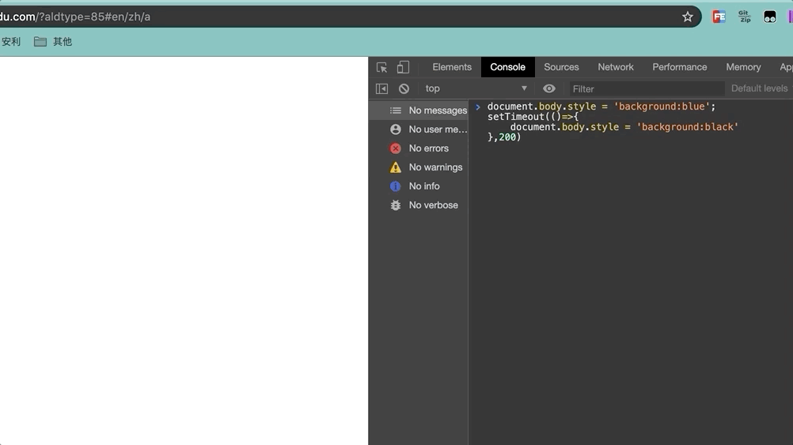
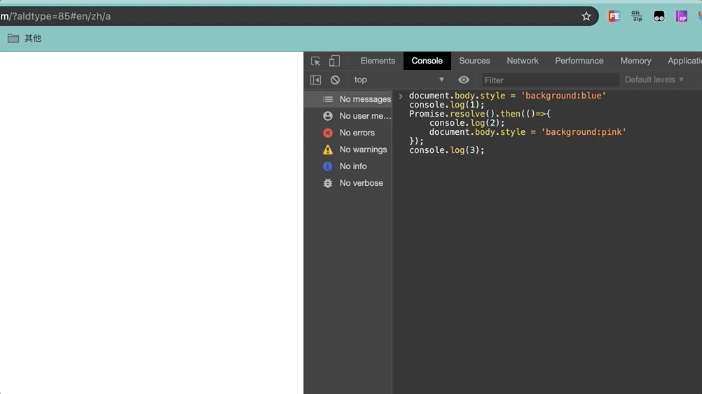

宏任务(macrotask)
在ECMAScript中，macrotask也被称为task
我们可以将每次执行栈执行的代码当做是一个宏任务(包括每次从事件队列中获取一个事件回调并放到执行栈中执行)， 每一个宏任务会从头到尾执行完毕，不会执行其他
由于JS引擎线程和GUI渲染线程是互斥的关系，浏览器为了能够使宏任务和DOM任务有序的进行，会在一个宏任务执行结果后，在下一个宏任务执行前，GUI渲染线程开始工作，对页面进行渲染
宏任务 -> GUI渲染 -> 宏任务 -> ...
复制代码常见的宏任务
- 主代码块
- setTimeout
- setInterval
- setImmediate ()-Node
- requestAnimationFrame ()-浏览器
微任务(microtask)
ES6新引入了Promise标准，同时浏览器实现上多了一个microtask微任务概念，在ECMAScript中，microtask也被称为jobs
我们已经知道宏任务结束后，会执行渲染，然后执行下一个宏任务， 而微任务可以理解成在当前宏任务执行后立即执行的任务
当一个宏任务执行完，会在渲染前，将执行期间所产生的所有微任务都执行完
宏任务 -> 微任务 -> GUI渲染 -> 宏任务 -> ...
常见微任务
- process.nextTick ()-Node
- Promise.then()
- catch
- finally
- Object.observe
- MutationObserver
简单区分宏任务与微任务
看了上述宏任务微任务的解释你可能还不太清楚，没关系，往下看，先记住那些常见的宏微任务即可
我们通过几个例子来看，这几个例子思路来自掘金云中君的文章参考链接【14】，通过渲染背景颜色来区分宏任务和微任务，很直观，我觉得很有意思，所以这里也用这种例子
找一个空白的页面，在console中输入以下代码
document.body.style = 'background:black';
document.body.style = 'background:red';
document.body.style = 'background:blue';
document.body.style = 'background:pink';
我们看到上面动图背景直接渲染了粉红色，根据上文里讲浏览器会先执行完一个宏任务，再执行当前执行栈的所有微任务，然后移交GUI渲染，上面四行代码均属于同一次宏任务，全部执行完才会执行渲染，渲染时GUI线程会将所有UI改动优化合并，所以视觉上，只会看到页面变成粉红色
再接着看
document.body.style = 'background:blue';
setTimeout(()=>{
document.body.style = 'background:black'
},200)

上述代码中，页面会先卡一下蓝色，再变成黑色背景，页面上写的是200毫秒，大家可以把它当成0毫秒，因为0毫秒的话由于浏览器渲染太快，录屏不好捕捉，我又没啥录屏慢放的工具，大家可以自行测试的，结果也是一样，最安全的方法是写一个index.html文件，在这个文件中插入上面的js脚本，然后浏览器打开，谷歌下使用控制台中performance功能查看一帧一帧的加载最为恰当，不过这样录屏不好录所以。。。
回归正题，之所以会卡一下蓝色，是因为以上代码属于两次宏任务，第一次宏任务执行的代码是将背景变成蓝色，然后触发渲染，将页面变成蓝色，再触发第二次宏任务将背景变成黑色
再来看
document.body.style = 'background:blue'
console.log(1);
Promise.resolve().then(()=>{
console.log(2);
document.body.style = 'background:pink'
});
console.log(3);

控制台输出 1 3 2 , 是因为 promise 对象的 then 方法的回调函数是异步执行，所以 2 最后输出
页面的背景色直接变成粉色，没有经过蓝色的阶段，是因为，我们在宏任务中将背景设置为蓝色，但在进行渲染前执行了微任务， 在微任务中将背景变成了粉色，然后才执行的渲染
微任务宏任务注意点
- 浏览器会先执行一个宏任务，紧接着执行当前执行栈产生的微任务，再进行渲染，然后再执行下一个宏任务
- 微任务和宏任务不在一个任务队列，不在一个任务队列
- 例如
setTimeout是一个宏任务，它的事件回调在宏任务队列，Promise.then()是一个微任务，它的事件回调在微任务队列，二者并不是一个任务队列 - 以Chrome 为例，有关渲染的都是在渲染进程中执行，渲染进程中的任务（DOM树构建，js解析…等等）需要主线程执行的任务都会在主线程中执行，而浏览器维护了一套事件循环机制，主线程上的任务都会放到消息队列中执行，主线程会循环消息队列，并从头部取出任务进行执行，如果执行过程中产生其他任务需要主线程执行的，渲染进程中的其他线程会把该任务塞入到消息队列的尾部，消息队列中的任务都是宏任务
- 微任务是如何产生的呢？当执行到script脚本的时候，js引擎会为全局创建一个执行上下文，在该执行上下文中维护了一个微任务队列，当遇到微任务，就会把微任务回调放在微队列中，当所有的js代码执行完毕，在退出全局上下文之前引擎会去检查该队列，有回调就执行，没有就退出执行上下文，这也就是为什么微任务要早于宏任务，也是大家常说的，每个宏任务都有一个微任务队列（由于定时器是浏览器的API，所以定时器是宏任务，在js中遇到定时器会也是放入到浏览器的队列中）
- 例如
图解宏任务和微任务

首先执行一个宏任务，执行结束后判断是否存在微任务
有微任务先执行所有的微任务，再渲染，没有微任务则直接渲染
然后再接着执行下一个宏任务
完整的Event loop

首先，整体的script(作为第一个宏任务)开始执行的时候，会把所有代码分为同步任务、异步任务两部分
同步任务会直接进入主线程依次执行
异步任务会再分为宏任务和微任务
宏任务进入到Event Table中，并在里面注册回调函数，每当指定的事件完成时，Event Table会将这个函数移到Event Queue中
微任务也会进入到另一个Event Table中，并在里面注册回调函数，每当指定的事件完成时，Event Table会将这个函数移到Event Queue中
当主线程内的任务执行完毕，主线程为空时，会检查微任务的Event Queue，如果有任务，就全部执行，如果没有就执行下一个宏任务
上述过程会不断重复，这就是Event Loop，比较完整的事件循环